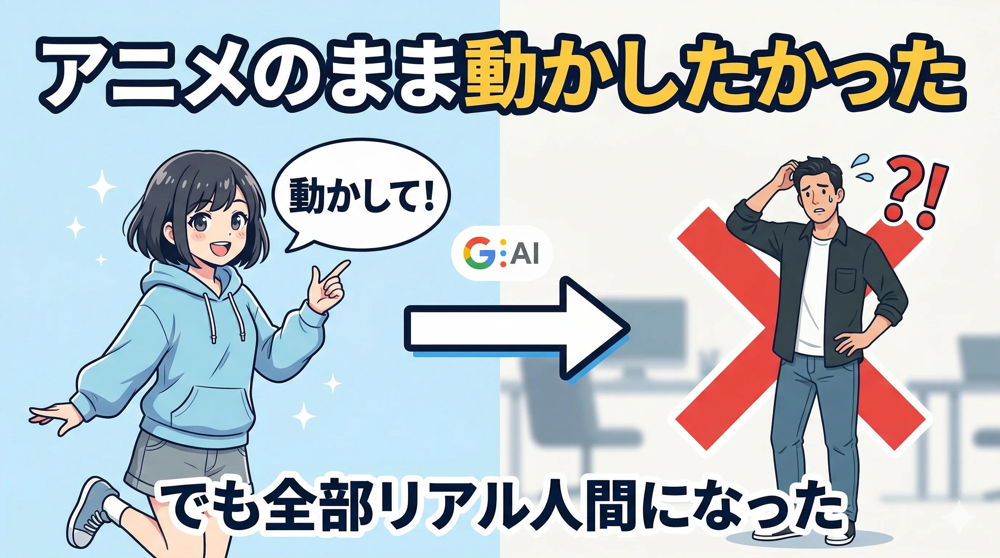
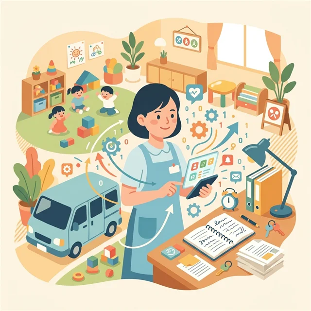
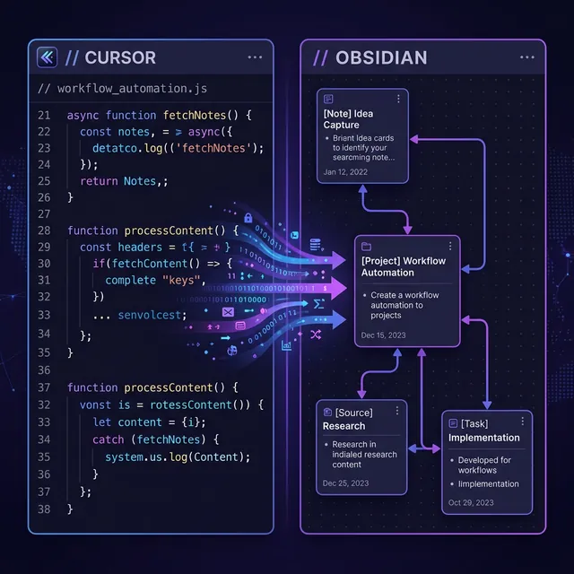
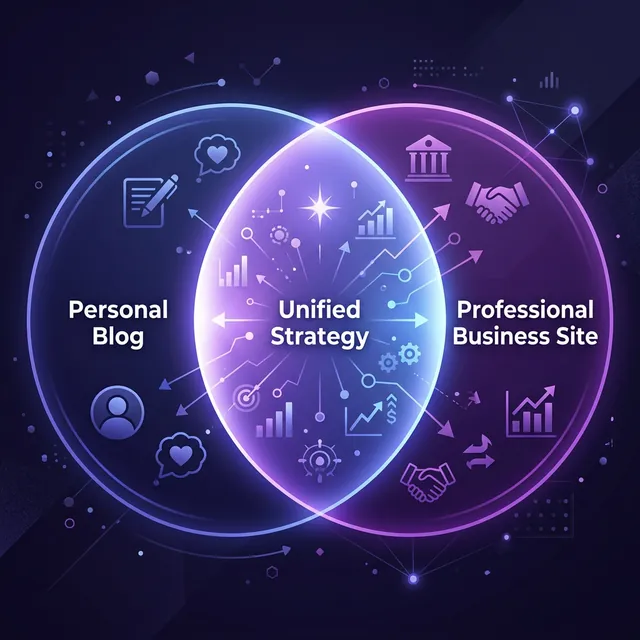

記事一覧
GitHub PagesのLighthouseスコアをPerformance 65→77に改善した話
静的サイトのパフォーマンスを改善したい方向け。WebP変換・フォントpreload・lazy loading など5つの施策でLighthouseのPerformanceスコアを65から77に引き上げた実体験を解説します。

Claude Codeのエージェントチームに名前をつけて運用する話〜ブロさん・リサさん・シス・ドウさん・歌詞さん・レビュさん〜
Claude Codeのエージェントに名前をつけたら、使い方が変わった。「ブロさん・リサさん・ドウさん」という名前が生まれた理由と、別人格として機能させる運用術を紹介します。

ハーネスエンジニアリングを調べたら自分がやっていたことに名前がついていた話〜CLAUDE.mdは「手綱」だった〜
「ハーネスエンジニアリング」という言葉を知って調べてみたら、自分がずっとやってきたCLAUDE.md整備そのものだった。プロンプトエンジニアリングの次のパラダイムを、個人開発者の視点で解説します。

AIツール同士のリレープレー〜1つのAIが止まっても完走できる仕組みの作り方〜
Claude Codeがレート制限で止まったら？認証エラーが出たら？AIツール同士のリレープレー設計術。Claude Code・AntiGravity・ChatGPTの得意/不得意を整理し、コンテキストファイル共有で引き継ぎをスムーズにする実践的な方法を解説。
AI CLIツールのスキル管理術 — Claude Code × AntiGravity 両刀使いの実践記
Claude CodeとAntiGravityを両方使うときのスキル管理はどうする？SKILL.md 1つから始まるスキルの仕組みと、複数ツール運用の現実的な解決策を実践ベースで解説します。

Google FlowでAIキャラをアニメのまま動かそうとしたら全部リアル人間になった話
Veo 3搭載のGoogle Flowでオリジナルのアニメキャラに動きをつけようとしたら、全然違うリアル人間が生成された。3つの方法を試して全部うまくいかなかった失敗記録。
AIに名前と性格を与えたら、チームっぽくなった話 ～菅さん・ミク・ケンジ・サトルと働く1日～
Claude Codeのスキルファイルに「名前」と「性格」を書いたら、AIが本当にチームっぽく動き始めた。菅さん（マネージャー）・ミク（コンテンツ）・ケンジ（システム）・サトル（リサーチ）と働く1日を記録。

Claude CodeでAIチームを作った話 ～社長・マネージャー・担当3名の組織を1人で構築～
Claude Codeのスキルファイルを使って「社長→マネージャー→担当3名」の階層型AIチームを構築。コンテンツ・システム・リサーチ担当にそれぞれ役割を持たせ、ダッシュボードで進捗を可視化しながら実際に動かした全記録。
Claude CodeとAntigravityのリレープレー ～マルチエージェントデモをAI2本で完走した話～
Claude Codeでマルチエージェントデモを実行→レート制限で止まる→AIエージェントフレームワーク「Antigravity」にバトンタッチして完走。4エージェント並行実行とリアルタイムダッシュボードの全記録。

Claude Codeのコンテキストが溜まったら？/compactで要約して続行する方法
Claude Codeは会話が長くなると精度が落ちる。/clearで全消去するより/compactで要約圧縮する方法が正解。CLAUDE.mdに設定を書いておけば自動提案もできる。

Windows日本語環境でClaude Codeステータスラインを動かす方法【全記録】
Claude Codeのステータスラインが「0% | waiting...」のまま動かない。Windows + Git Bash + 日本語パスという環境で詰まった全記録。cygpath問題・文字化け・jqインストールまで解決策を網羅します。

福祉デイケアの属人化問題〜解決したいと考えているが、まだできていない話〜
福祉デイケアに蔓延る「属人化」問題。送迎業務・情報管理・リスクマネジメントの改革を構想しているが、まだ実践できていない。正直な現場の記録。
5ヶ月ぶりのブログ復活！AI「Antigravity」を使ってみた感想
AIアシスタント「Antigravity」を実際に使ってみた感想とレビュー。驚きの機能・使い勝手・他のAIツールとの比較まで、体験談をもとに詳しく紹介します。
Vault自動化と引き継ぎ整備の実践記録
Obsidian Vaultの自動化をゼロから構築する手順を解説。バックアップ・重複退避・Windowsタスクスケジューラ登録・引き継ぎガイド作成まで再現性重視でまとめました。

Cursor×Obsidian連携で日次ワークを短縮する実践ログ
CursorとObsidianを連携させて日次作業を自動化する具体的な手順を解説。日付修正の安全化・統合ランチャー構築・つまずきと回避策まで網羅。

ハイブリッドサイト戦略の実装ガイド（個人ビジネス向け）
個人ビジネス向けに、企業サイトとブログを最小構成で統合する設計と運用を解説。信頼・SEO・成約導線を同時に満たすハイブリッドサイトの作り方。
Obsidian Vault完全最適化プロジェクト - 自律型システム管理の実現
Obsidian Vaultを完全自動化するシステムの構築手順を紹介。ファイル構造の最適化・重複削除・統合ランチャー作成まで一気通貫で解説します。
4児の父が語る、仕事と家庭の両立で学んだこと
福祉の現場で働きながら4人の子供を育てる父親が実践する時間管理術を紹介。仕事・育児・自己学習を両立するための具体的なスケジュール管理法。
福祉の現場で実践する業務効率化の具体的方法
福祉の現場で実践している業務効率化の方法を5つ紹介。ObsidianやAIツールを活用した情報管理・記録効率化など、現場で使える具体的な手法を解説。
なぜ私は全てのメモをObsidianに集約したのか？
Obsidianにすべてのメモとナレッジを集約する方法を解説。福祉の現場での実践例をもとに、知識管理・学習効率化への活用法を紹介します。
GitHub Pagesでアフィリエイトブログを構築した話
GitHub Pagesを使ってアフィリエイトブログを無料で構築する手順を解説。HTMLとTailwind CSSで作るシンプルな収益化サイトの作り方を詳しく紹介。
おすすめツール
実際に使っているツール・サービスを正直にレビューします。
書いている人
AIツールやプログラミングを使った業務効率化を試行錯誤しながら、「仕組みで解決する」をモットーに日々の記録を書いています。
うまくいかなかったことも正直に書くのがこのブログのルールです。